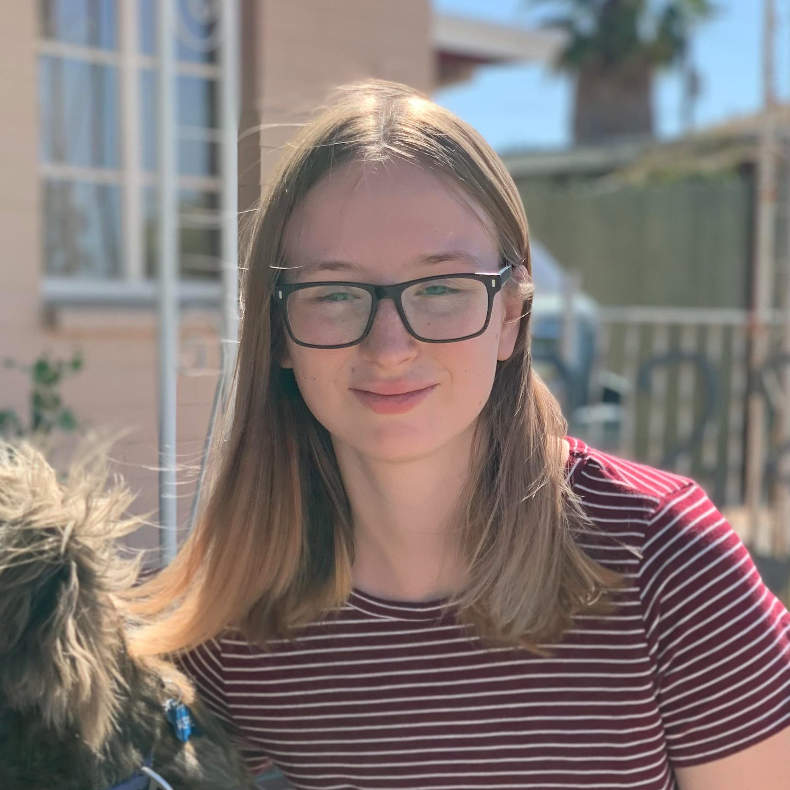
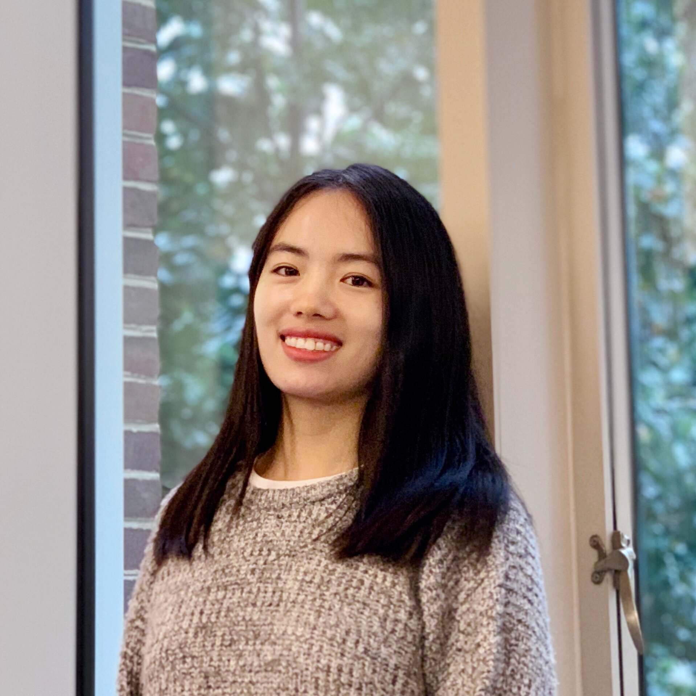

Large Language Models (LLMs) have become increasingly central to search and recommendation scenarios due to their remarkable capabilities in natural language understanding and generation. Examples of LLMs include commercial products such as GPT-4 and Gemini, as well as open-source models such as LLaMA and Mistral. These models are demonstrating great potential to revolutionize various aspects of search and recommendation systems – including core algorithms, system architecture, content understanding, user understanding, interactive modalities, domain-specific applications, and how such systems impact society.
As the focus on LLMs have increased in all fields, the rate of innovation across the world has also accelerated. SIGIR 2024 will feature a Large Language Model Day (LLM Day) as a themedaddition to the SIGIR main conference We embrace LLMs into IR research and complement the offerings of the main conference schedule. The LLM Day will facilitate a timely discussion on recent research and applications of LLMs covering both the core SIGIR community as well as other communities. In addition, attendees of LLM Day will receive a schedule highlighting relevant talks on LLMs throughout the conference to help navigate the full conference.
LLM Day focuses on the following types of work:
- Recent progress of foundational research in LLMs in academia and industry;
- Emerging applications of LLMs;
- Innovating and building on open-source LLMs;
- Intersection of core IR research and LLMs, including IR for LLMs and LLMs for IR;
- The state-of-practice of LLMs for search and recommendation;
- Evaluation of foundation models.
We expect the likely topics to include but not be limited to: RAG and Dense Retrieval, Inference Efficiency, Alignment and Fine-tuning from Open-Ended Feedback, Generating Synthetic Data, Generative Retrieval and Recommendations, Long-Context Understanding, Multimodal Interaction, and AI Ethics & Safety.
Registration for attendees is open for all interested in the topic.
Time & Location
Date: Tuesday, July 16, 2024
Room: Presidential Ballroom, Capital Hilton
Schedule
| Time | Event | Speaker |
|---|---|---|
| 09:00 - 10:00 | Plenary Keynote |
Thorsten Joachims (Cornell University) |
| 10:00 - 10:30 | Coffee Break | |
| 10:30 - 11:00 | SIGIR LLM Day Highlight Talk |
 Jason Weston (Meta): Self-Rewarding LLMs |
| 11:00 - 11:45 | State of LLMs in Search and Recommendations |
Chenyan Xiong (Carnegie Mellon University): The Role of Information Retrieval in the Era of Large Language Models  Xinyu Crystina Zhang (University of Waterloo): Multilinguality in the Era of Large Language Models |
| 11:45 - 12:30 | LLMs at Industry Scale |
Dawei Yin (Baidu): Large Language Models in Baidu Search  Amanda Bertsch (Carnegie Mellon University): Unlimiformer and Long Context Models |
| 12:30 - 13:30 | Lunch Break | |
| 13:30 - 15:00 | Health, Legal, Finance, and Ethics |
Subhabrata Mukherjee (Hippocratic AI): Building the First Safety-focused Conversational AI for Healthcare Michael Cole (LexisNexis): LLMs in the Legal Domain Anju Kambadur (Bloomberg): Generative AI in Finance Jordan Meyer (Spawning): AI Training Data and Consent |
| 15:00 - 15:30 | Coffee Break | |
| 15:30 - 16:30 | Multi-Agents & Reasoning |
 Qingyun Wu (Pennsylvania State University) and Chi Wang (Microsoft Research) AutoGen: A Multi-Agent Framework for Enabling Next-Gen AI Applications Omar Khattab (Stanford University): DSPy: Self-Improving Language Programs Mirac Suzgun (Stanford University): Meta-prompting |
| 16:30 - 17:30 | Anticipated Trends in Search |
 Benjamin Piwowarski (National Centre for Scientific Research): Index-based Retrievers in the Neural Era Bryan McCann (You.com): The Future of Trust in LLMs |
Large Language Model Day Chairs
Yue Wang, University of North Carolina at Chapel Hill, USAPaul Bennett, Spotify, USA
Julia Kiseleva, Microsoft Research, USA